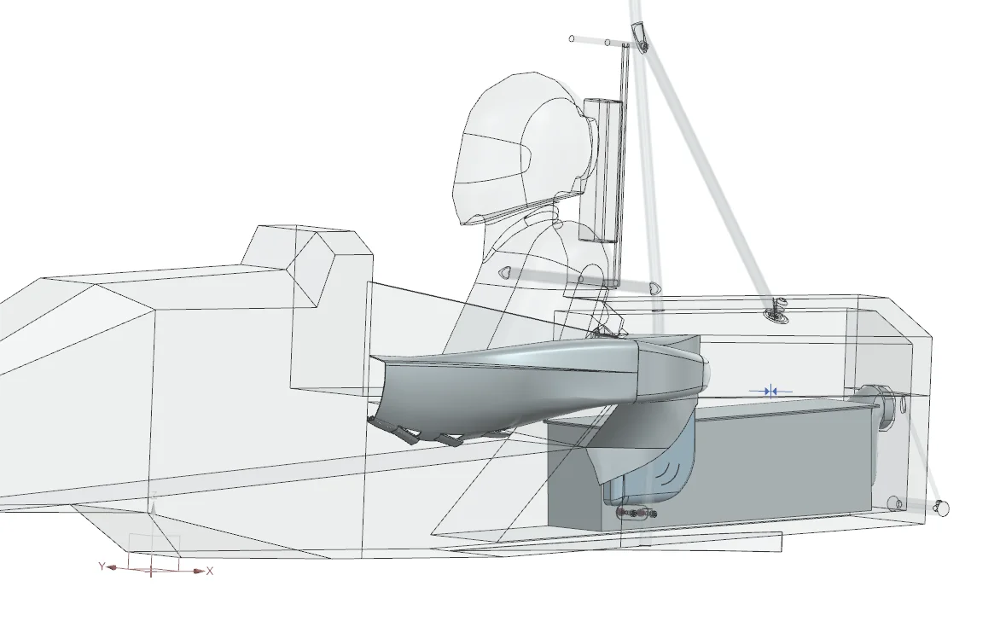
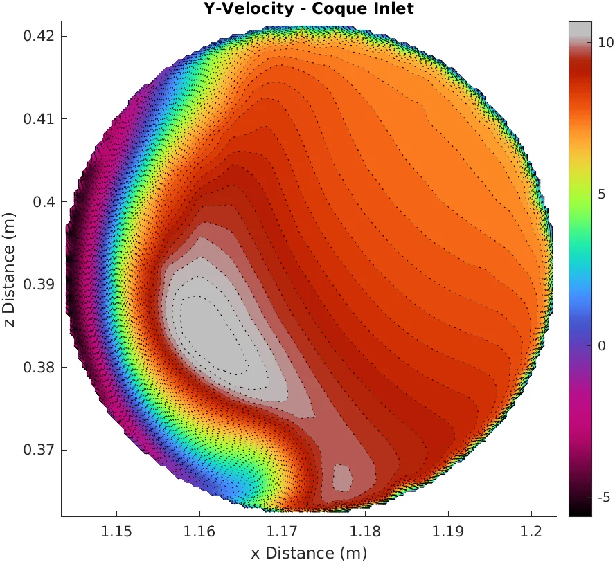
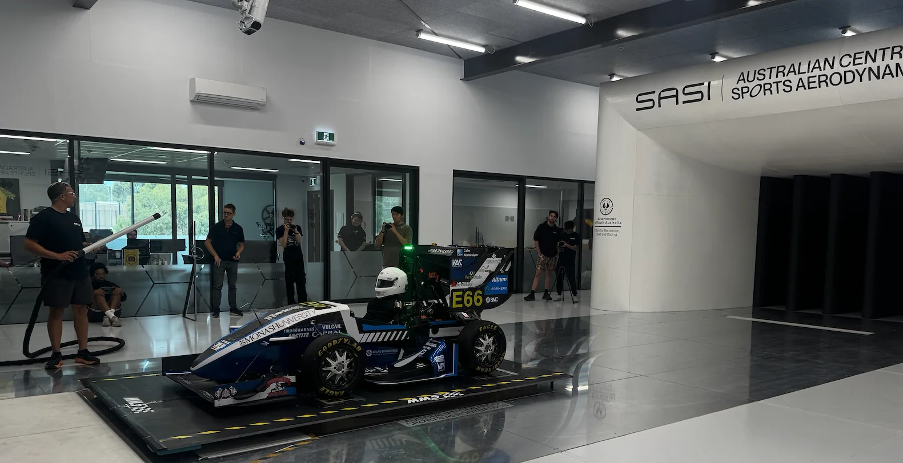

Aerodynamics, cooling and CFD workflow development at Monash Motorsport.

External sidepod ducting and an internal flow path for the M26 pack. 0.768 CLA recovered across the design iteration, balance on 50.0%, and accumulator mass flow raised from 0.008 to 0.021 kg/s.

Fan boundary conditions, thermal simulation and accumulator ducting added to a workflow that had none, then carried into PyFluent on HPC with automated post-processing.

A week in Adelaide with two cars, validating our CFD and turbulence modelling against wind tunnel data.
Ansys Fluent 25R1 · PyFluent scripting · SLURM / HPC batch workflows · mesh generation and convergence · boundary condition derivation · MATLAB post-processing
Conjugate heat transfer setup · duct and internal flow · fan curve and system curve matching · CFD-to-rig-test validation
Siemens NX · duct and packaging geometry · Cooling system integration into vehicle architecture